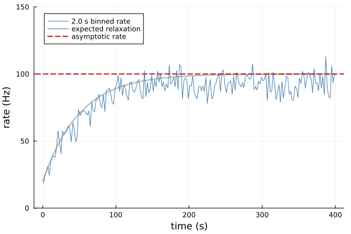

Single self-interacting unit
This example considers the simplest non-trivial configuration: a single unit interacting with itself, without plasticity.
Initialization
using Random
using Statistics
using Plots
Random.seed!(0)
using HawkesPlasticNetworks; global const H = HawkesPlasticNetworks;Define the parameters
n_units = 1 # one unit only
τ_kernel = 10.0 # timescale for membrane dynamics
w_self = 0.8 # self connection weights
h_in = 20.0 # input current
initial_rate = 0.0 # initial rate
n_spikes = 60_000 # total spikes in the simulation
bin_width = 2.0 # width for the rate average2.0For a stable linear Hawkes process with a normalized exponential kernel, the stationary rate is h_in / (1 - w_self).
theoretical_rate = h_in/(1-w_self)
println("Theoretical rate $(round(theoretical_rate,digits=2)) Hz")Theoretical rate 100.0 HzDefine the population and connection
population = H.PopulationExpKernelExcitatory(
n_units,τ_kernel; label="unit");the connection has the one-neuron population connected to itself
connection = H.ConnectionWithWeights(
population,fill(w_self,n_units,n_units),population);Important to define the network, you need connected populations. This requires to re-define the connection structure for each population in the simulation. The inputs are:
H.ConnectedPopulationExpKernel(populationpost,inputspost,(connection1,populationpre1), (connection2,populationpre2),...,(connectionn,populationpre_n))
The argument order is always post-synaptic first, then pre-synaptic.
connected_population = H.ConnectedPopulationExpKernel(
population,fill(h_in,n_units),(connection,population))HawkesPlasticNetworks.ConnectedPopulationExpKernel{1, HawkesPlasticNetworks.PopulationExpKernelExcitatory{HawkesPlasticNetworks.Trace{Vector{Float64}, Float64}}, Tuple{HawkesPlasticNetworks.ConnectionWithWeights{Tuple{}}}, Tuple{HawkesPlasticNetworks.PopulationExpKernelExcitatory{HawkesPlasticNetworks.Trace{Vector{Float64}, Float64}}}}(HawkesPlasticNetworks.PopulationExpKernelExcitatory{HawkesPlasticNetworks.Trace{Vector{Float64}, Float64}}(:unit, 1, HawkesPlasticNetworks.Trace{Vector{Float64}, Float64}([0.0], 10.0, 0.0), [Inf]), (HawkesPlasticNetworks.ConnectionWithWeights{Tuple{}}([0.8;;], :unit, :unit, (), Base.RefValue{Bool}(false)),), (HawkesPlasticNetworks.PopulationExpKernelExcitatory{HawkesPlasticNetworks.Trace{Vector{Float64}, Float64}}(:unit, 1, HawkesPlasticNetworks.Trace{Vector{Float64}, Float64}([0.0], 10.0, 0.0), [Inf]),), [20.0])Record the spike train and mean firing rate
rec_fulltrain = H.RecorderPopulationTrain(
population.label,n_spikes)HawkesPlasticNetworks.RecorderPopulationTrain(:unit, 60000, [NaN, NaN, NaN, NaN, NaN, NaN, NaN, NaN, NaN, NaN … NaN, NaN, NaN, NaN, NaN, NaN, NaN, NaN, NaN, NaN], [-1, -1, -1, -1, -1, -1, -1, -1, -1, -1 … -1, -1, -1, -1, -1, -1, -1, -1, -1, -1], 0.0, Inf, Base.RefValue{Int64}(0))Rate recorders allocate their bins in advance. Twice the expected duration leaves ample room for this seeded example.
rate_recording_end = 2*n_spikes/theoretical_rate
rec_binnedrate = H.RecorderPopulationRate(
population,rate_recording_end; Δt=bin_width)HawkesPlasticNetworks.RecorderPopulationRate(:unit, 1, 2.0, [1.0, 3.0, 5.0, 7.0, 9.0, 11.0, 13.0, 15.0, 17.0, 19.0 … 1183.0, 1185.0, 1187.0, 1189.0, 1191.0, 1193.0, 1195.0, 1197.0, 1199.0, 1201.0], [0.0, 0.0, 0.0, 0.0, 0.0, 0.0, 0.0, 0.0, 0.0, 0.0 … 0.0, 0.0, 0.0, 0.0, 0.0, 0.0, 0.0, 0.0, 0.0, 0.0], 0.0, 1199.9999999999998, Base.RefValue{Float64}(-Inf))Define the network
network = H.RecurrentNetworkExpKernel(
(connected_population,),(rec_fulltrain,rec_binnedrate))HawkesPlasticNetworks.RecurrentNetworkExpKernel{1, Tuple{HawkesPlasticNetworks.ConnectedPopulationExpKernel{1, HawkesPlasticNetworks.PopulationExpKernelExcitatory{HawkesPlasticNetworks.Trace{Vector{Float64}, Float64}}, Tuple{HawkesPlasticNetworks.ConnectionWithWeights{Tuple{}}}, Tuple{HawkesPlasticNetworks.PopulationExpKernelExcitatory{HawkesPlasticNetworks.Trace{Vector{Float64}, Float64}}}}}, 2, Tuple{HawkesPlasticNetworks.RecorderPopulationTrain, HawkesPlasticNetworks.RecorderPopulationRate}}((HawkesPlasticNetworks.ConnectedPopulationExpKernel{1, HawkesPlasticNetworks.PopulationExpKernelExcitatory{HawkesPlasticNetworks.Trace{Vector{Float64}, Float64}}, Tuple{HawkesPlasticNetworks.ConnectionWithWeights{Tuple{}}}, Tuple{HawkesPlasticNetworks.PopulationExpKernelExcitatory{HawkesPlasticNetworks.Trace{Vector{Float64}, Float64}}}}(HawkesPlasticNetworks.PopulationExpKernelExcitatory{HawkesPlasticNetworks.Trace{Vector{Float64}, Float64}}(:unit, 1, HawkesPlasticNetworks.Trace{Vector{Float64}, Float64}([0.0], 10.0, 0.0), [Inf]), (HawkesPlasticNetworks.ConnectionWithWeights{Tuple{}}([0.8;;], :unit, :unit, (), Base.RefValue{Bool}(false)),), (HawkesPlasticNetworks.PopulationExpKernelExcitatory{HawkesPlasticNetworks.Trace{Vector{Float64}, Float64}}(:unit, 1, HawkesPlasticNetworks.Trace{Vector{Float64}, Float64}([0.0], 10.0, 0.0), [Inf]),), [20.0]),), (HawkesPlasticNetworks.RecorderPopulationTrain(:unit, 60000, [NaN, NaN, NaN, NaN, NaN, NaN, NaN, NaN, NaN, NaN … NaN, NaN, NaN, NaN, NaN, NaN, NaN, NaN, NaN, NaN], [-1, -1, -1, -1, -1, -1, -1, -1, -1, -1 … -1, -1, -1, -1, -1, -1, -1, -1, -1, -1], 0.0, Inf, Base.RefValue{Int64}(0)), HawkesPlasticNetworks.RecorderPopulationRate(:unit, 1, 2.0, [1.0, 3.0, 5.0, 7.0, 9.0, 11.0, 13.0, 15.0, 17.0, 19.0 … 1183.0, 1185.0, 1187.0, 1189.0, 1191.0, 1193.0, 1195.0, 1197.0, 1199.0, 1201.0], [0.0, 0.0, 0.0, 0.0, 0.0, 0.0, 0.0, 0.0, 0.0, 0.0 … 0.0, 0.0, 0.0, 0.0, 0.0, 0.0, 0.0, 0.0, 0.0, 0.0], 0.0, 1199.9999999999998, Base.RefValue{Float64}(-Inf))))Run the simulation
function run_simulation!(network,n_spikes,initial_rate)
t_now = 0.0
H.reset!(network)
H.set_initial_rates!(connected_population,initial_rate)
for _ in 1:n_spikes
t_now = H.dynamics_step!(t_now,network)
end
return t_now
end
last_spike_time = run_simulation!(network,n_spikes,initial_rate)
train = H.get_content(rec_fulltrain)
binned_rate = H.get_content(rec_binnedrate)
empirical_rate = train.n_recorded_spikes/last_spike_time
reached_bins = binned_rate.times .< last_spike_time
(; theoretical_rate,empirical_rate,last_spike_time,
n_recorded_spikes=train.n_recorded_spikes,
mean_binned_rate=mean(binned_rate.rates[reached_bins]))(theoretical_rate = 100.00000000000003, empirical_rate = 90.13641653301451, last_spike_time = 665.6577031551242, n_recorded_spikes = 60000, mean_binned_rate = 90.11897590361446)Relaxation toward the asymptotic rate
The trace starts at initial_rate, while the external input makes the initial conditional intensity h_in + w_self * initial_rate. Its expected value relaxes with time constant τ_kernel/(1-w_self).
initial_intensity = h_in + w_self*initial_rate
relaxation_time = τ_kernel/(1-w_self)
expected_rate(t) = theoretical_rate +
(initial_intensity-theoretical_rate)*exp(-t/relaxation_time)
plot_end = 8*relaxation_time
idx_plot = reached_bins .& (binned_rate.times .<= plot_end)
plot(
binned_rate.times[idx_plot],binned_rate.rates[idx_plot];
label="$(bin_width) s binned rate",color=:steelblue,alpha=1.0,
xlabel="time (s)",ylabel="rate (Hz)",ylim=(0,1.5theoretical_rate))
plot!(
t -> expected_rate(t),0,plot_end;
label="expected relaxation",color=:grey,linewidth=2,
alpha=0.6)
hline!(
[theoretical_rate];
label="asymptotic rate",color=:firebrick,linestyle=:dash,linewidth=2)
This page was generated using Literate.jl.